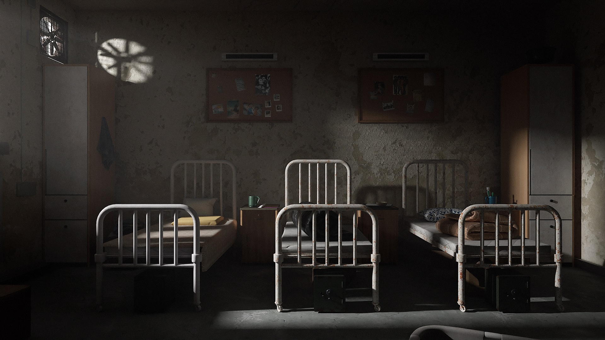
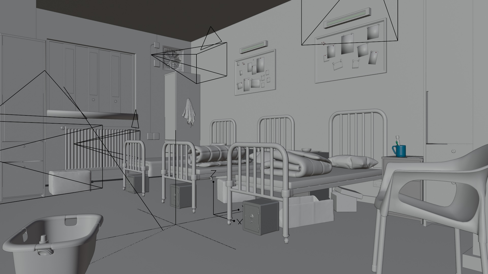
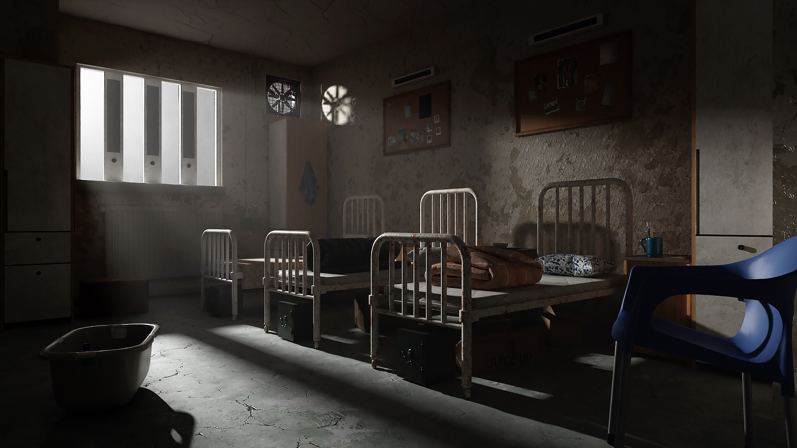
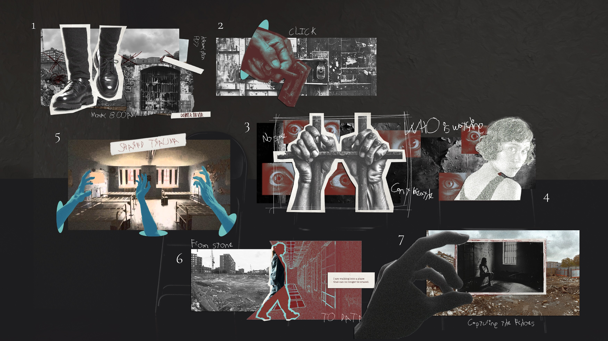
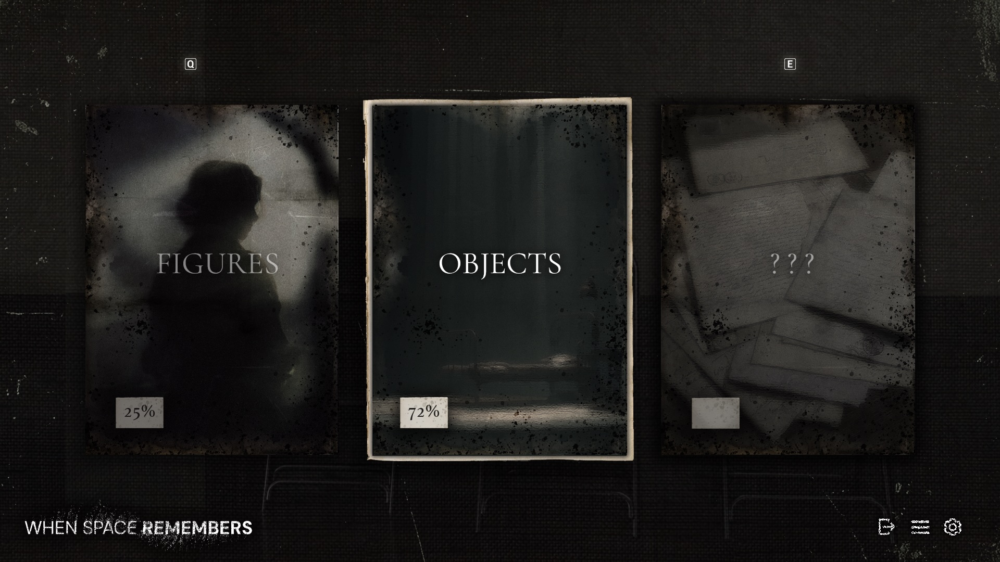
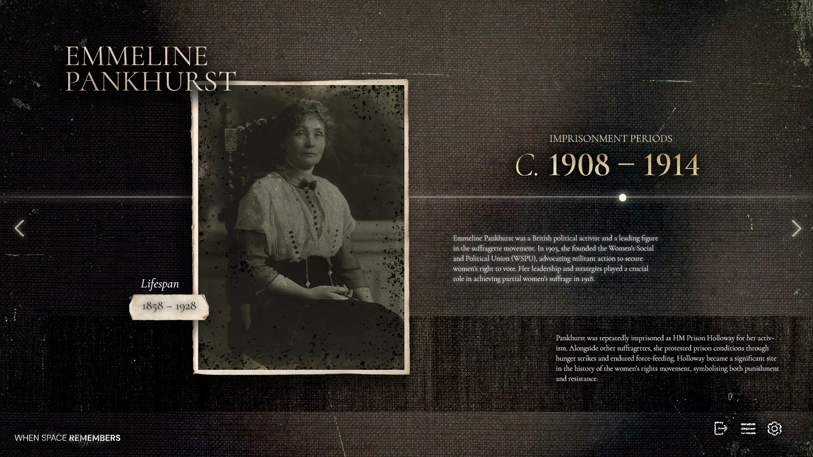
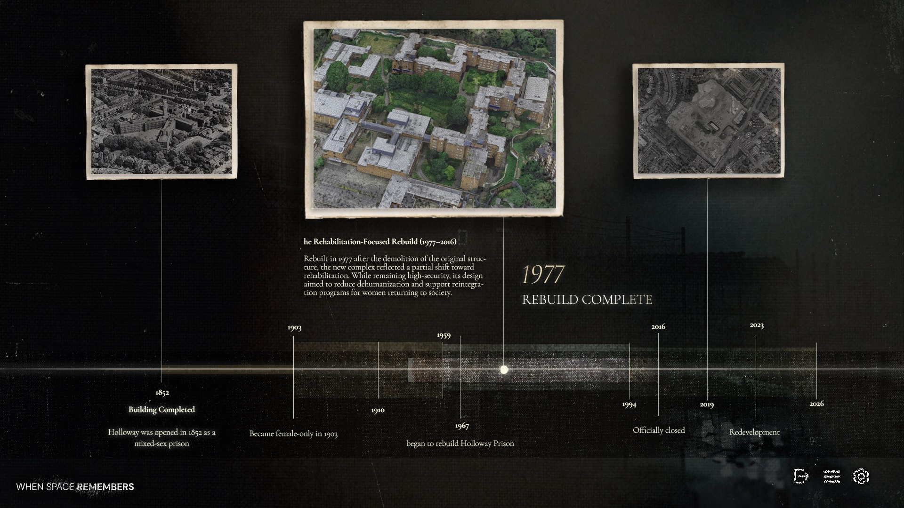
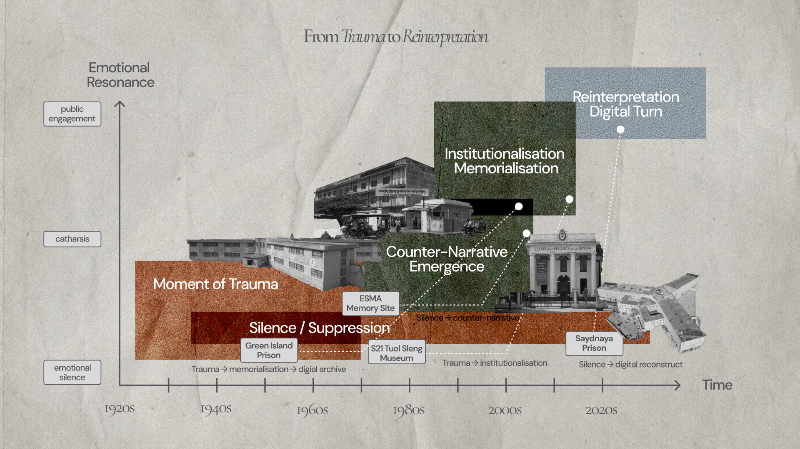

001 · 2026 · Narrative Space
When Space
Remembers
Project Overview
Space as
Memory
When Space Remembers is a digital spatial experience that reconstructs the demolished HM Prison Holloway. It operates as a digital palimpsest, where overlapping layers of history and memory are encountered through first-person navigation. Rather than presenting a fixed archive, the project allows users to experience fragments of testimony, space, and atmosphere through interaction.
- Type Real-time Environment
- Engine Unreal Engine 5
- Modelling Blender
Phase 01
Reference & Research
The project began with historical research into HM Prison Holloway, including archival records, documentaries, and case studies of the site. Research also explored the prison’s relationship with local communities, feminist history, and the redevelopment of the area after demolition.
Phase 02
Modelling & Asset Build
Architectural spaces and environmental assets were developed through references to historical photographs, documentary footage, and prison floor plans. The modelling process focused on reconstructing key spatial elements while maintaining an atmospheric and interpretive visual approach.
Phase 03
Lighting & Atmosphere
Lighting design was used to establish emotional tone and spatial tension throughout the experience. Strong artificial illumination, darkness, fog, and contrasting interior light conditions were combined to suggest surveillance, isolation, and fragmented memory.



Six-Person Cell — Reconstruction from historical archives // Before/After Comp.
06 // Process
SPATIAL
NARRATIVE
The experience of When Space Remembers unfolds through a sequential spatial journey that guides the player through key environments inspired by the architecture of HM Prison Holloway. The navigation follows a hero path, moving from public entry spaces into increasingly intimate and controlled areas of the prison.





01 / 05
Spatial Storyboard
Initial narrative mapping — tracing movement paths and emotional beats through the reconstructed prison block.
Contact